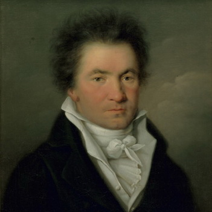
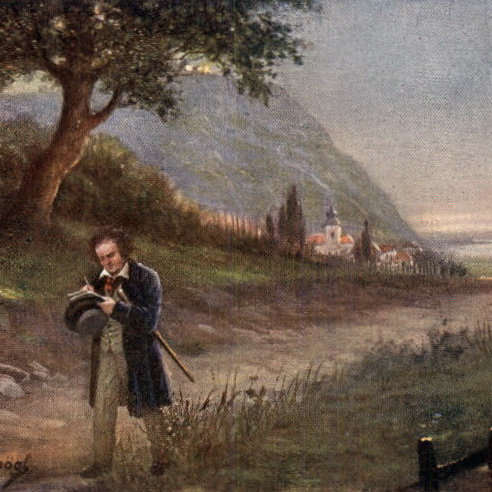
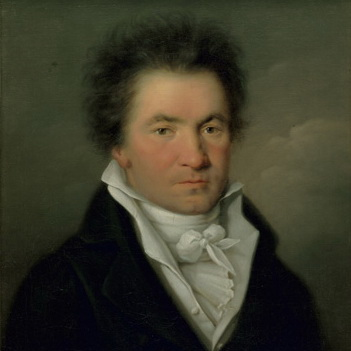
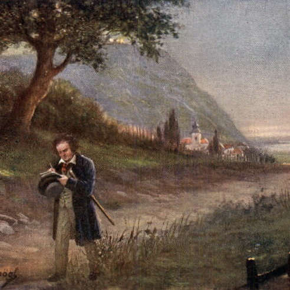

"To play without passion is inexcusable!"
Who is Beethoven? His name is Ludwig Van Beethoven. Beethoven was born in Bonn, Germany on December 16, 1770 and died on March 26, 1827 at the age of 56. He was a prominent figure in Classical music during the 17th-18th century. Beethoven was a German composer and musical figure in the Classical and Romantic eras of music. Beethoven's personal life was a tragedy. He struggled against deafness, but continued to pursue his career as a composer. Even though Beethoven struggled with deafness and could no longer hear well enough to properly play the piano, Beethoven composed some of his best music after he was deaf. In fact, a large amount of his best works were composed during the last 10 years of his life.
Fun Fact: Beethoven was almost completely deaf when he composed his Ninth Symphony, also known as "Ode to Joy."
  
 